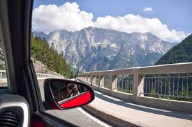

Primeiras dicas...

Vai alugar um Carro?

Cuidados com as Malas!!!

Não sei o idioma do País...E agora?
"... Explorar novos destinos, seja sozinho(a) ou acompanhado(a),
proporciona experiências incríveis e deixa marcas inesquecíveis.
Conecte-se a outras culturas e tradições, admire paisagens
deslumbrantes, saboreie a gastronomia local e participe de atividades e
experiências libertadoras. Conheça novas pessoas e compartilhe
momentos especiais. Viajar para lugares desconhecidos desafia e
expande horizontes pessoais, promovendo autoconhecimento e
confiança. As lições aprendidas e as superações transformam-se em
valiosas memórias. Desligar-se da rotina para desfrutar de momentos
de relaxamento e paz em um ambiente novo, recarrega as energias e
proporciona uma renovação...”
Foi devido a essa paixão em viajar e a vontade de ajudar, que criei o “Viver de Férias ”, um
espaço dedicado a partilhar experiências, dicas,
e te ajudar no planejamento da sua viagem.
Acredito que viajar é mais do que visitar
lugares, é uma oportunidade de crescimento
pessoal e conexão com o mundo..."
" Meu nome é Elaine Secco, sou esposa, mãe e avó, uma eterna apaixonada pela família, pelos amigos e por viagens. Com anos de experiência em Recursos Humanos, sempre trabalhei muito, e nunca consegui tempo para pensar em viajar. Vivo em Portugal desde 2018, e desde então comecei a explorar mais esse cantinho maravilhoso do mundo. Visitei alguns países, fiz Cruzeiros maravilhosos na Europa e no Brasil, e gostaria de partilhar um pouco da minha experiência com você, que talvez ainda esteja iniciando essa jornada. Se está em busca de dicas que possam facilitar e ajudar nas suas viagens, venha comigo, meu objetivo é te ajudar a ter as melhores experiências possíveis."
Vai alugar um Carro?
Cuidados com as Malas!!!
Não sei o idioma do País...E agora?